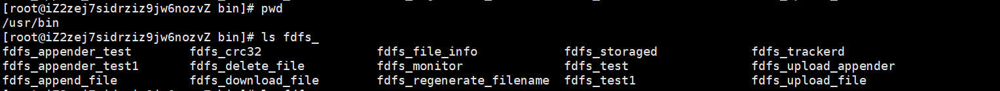
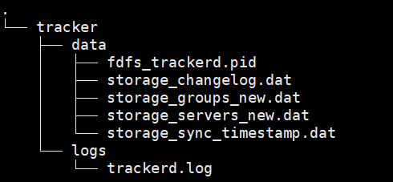
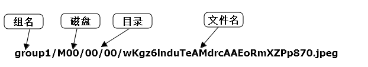
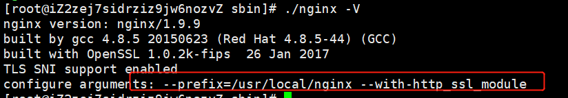

FastDFS
一、介绍
二、单节点安装
如果以root用户安装，不修改任何配置，默认的脚本在/usr/bin/fdfs下，配置文件在/etc/fdfs下，但是在生产上，root账户我们不能随意去使用，所以我们需要自定义用户来使用fastdfs
安装前准备
新建用户
useradd fdfs
设置用户密码
passwd fdfs
安装依赖
yum install gcc-c++ perl-devel pcre-devel openssl-devel zlib-devel wget
软件上传到/home/fdfs/soft
修改权限
chown -R fdfs:fdfs /home/fdfs/
安装开始
全程以root用户安装
1.解压安装libfastcommon-1.0.57.tar.gz
cd /home/fdfs/soft
tar -xzvf libfastcommon-1.0.57.tar.gz
cd libfastcommon-1.0.57
./make.sh
./make.sh install
2.解压安装文件fastdfs-6.08.tar.gz
cd /home/fdfs/soft
tar -xzvf fastdfs-6.08.tar.gz
cd /home/fdfs/soft/fastdfs-6.08
./make
./make install
执行复制配置脚本，将脚本复制到/etc/fdfs下
./setup.sh
脚本命令目录在/usr/bin下

配置文件在/etc/fdfs下
3.配置FastDFS跟踪器(Tracker)
修改配置tracker.conf
vim /etc/fdfs/tracker.conf
修改内容如下
#tracker日志和数据目录
base_path = /data/fdfs/tracker
创建base_path目录
mkdir -p /data/fdfs/tracker
启动Tracker
/usr/bin/fdfs_trackerd /etc/fdfs/tracker.conf start
查看 FastDFS Tracker 是否已成功启动
/usr/bin/fdfs_trackerd /etc/fdfs/tracker.conf status
关闭Tracker命令
/usr/bin/fdfs_trackerd /etc/fdfs/tracker.conf stop
设置Tracker开机启动
chkconfig fdfs_trackerd on
tracker server 目录及文件结构

4.配置 FastDFS 存储 (Storage)
vim /etc/fdfs/storage.conf
修改内容如下
#storage的日志和数据目录
base_path=/data/fdfs/storage
#实际文件存放目录
store_path0=/data/fdfs/storage/files
#tracker的ip,多个就往下复制
tracker_server=ip:22122
创建对应目录
mkdir -p /data/fdfs/storage/files
启动 Storage
/usr/bin/fdfs_storaged /etc/fdfs/storage.conf start
查看storage服务状态
service fdfs_storaged status
关闭Storage
/usr/bin/fdfs_storaged /etc/fdfs/storage.conf stop
查看Storage和Tracker是否在通信：
/usr/bin/fdfs_monitor /etc/fdfs/storage.conf
设置 Storage 开机启动
chkconfig fdfs_storaged on
Storage 目录
同 Tracker，Storage 启动成功后，在base_path 下创建了data、logs目录，记录着 Storage Server 的信息。 在 store_path0/data 目录下，创建了N*N个子目录：
[root@iZ2zej7sidrziz9jw6nozvZ data]# pwd
/data/fdfs/storage/files/data
[root@iZ2zej7sidrziz9jw6nozvZ data]# ls
00 06 0C 12 18 1E 24 2A 30 36 3C 42 48 4E 54 5A 60 66 6C 72 78 7E 84 8A 90 96 9C A2 A8 AE B4 BA C0 C6 CC D2 D8 DE E4 EA F0 F6 FC
01 07 0D 13 19 1F 25 2B 31 37 3D 43 49 4F 55 5B 61 67 6D 73 79 7F 85 8B 91 97 9D A3 A9 AF B5 BB C1 C7 CD D3 D9 DF E5 EB F1 F7 FD
02 08 0E 14 1A 20 26 2C 32 38 3E 44 4A 50 56 5C 62 68 6E 74 7A 80 86 8C 92 98 9E A4 AA B0 B6 BC C2 C8 CE D4 DA E0 E6 EC F2 F8 FE
03 09 0F 15 1B 21 27 2D 33 39 3F 45 4B 51 57 5D 63 69 6F 75 7B 81 87 8D 93 99 9F A5 AB B1 B7 BD C3 C9 CF D5 DB E1 E7 ED F3 F9 FF
04 0A 10 16 1C 22 28 2E 34 3A 40 46 4C 52 58 5E 64 6A 70 76 7C 82 88 8E 94 9A A0 A6 AC B2 B8 BE C4 CA D0 D6 DC E2 E8 EE F4 FA
05 0B 11 17 1D 23 29 2F 35 3B 41 47 4D 53 59 5F 65 6B 71 77 7D 83 89 8F 95 9B A1 A7 AD B3 B9 BF C5 CB D1 D7 DD E3 E9 EF F5 FB
4.配置client
修改 Tracker 服务器中的客户端配置文件
vim /etc/fdfs/client.conf
修改内容如下
#client的日志和数据目录
base_path=/data/fdfs/client
#tracker的ip端口
tracker_server=ip:22122
创建对应目录
mkdir -p /data/fdfs/client
上传测试
/usr/bin/fdfs_test /etc/fdfs/client.conf upload 1234.jpg
成功后信息
This is FastDFS client test program v6.08
Copyright (C) 2008, Happy Fish / YuQing
FastDFS may be copied only under the terms of the GNU General
Public License V3, which may be found in the FastDFS source kit.
Please visit the FastDFS Home Page http://www.fastken.com/
for more detail.
[2022-08-09 10:39:12] DEBUG - base_path=/data/fdfs/client, connect_timeout=5, network_timeout=60, tracker_server_count=1, anti_steal_token=0, anti_steal_secret_key length=0, use_connection_pool=0, g_connection_pool_max_idle_time=3600s, use_storage_id=0, storage server id count: 0
tracker_query_storage_store_list_without_group:
server 1. group_name=, ip_addr=172.18.59.251, port=23000
group_name=group1, ip_addr=172.18.59.251, port=23000
storage_upload_by_filename
group_name=group1, remote_filename=M00/00/00/rBI7-2LxyNCAA_omAAF1-ZVeThs421.jpg
source ip address: 172.18.59.251
file timestamp=2022-08-09 10:39:12
file size=95737
file crc32=2505985563
example file url: http://172.18.59.251/group1/M00/00/00/rBI7-2LxyNCAA_omAAF1-ZVeThs421.jpg
storage_upload_slave_by_filename
group_name=group1, remote_filename=M00/00/00/rBI7-2LxyNCAA_omAAF1-ZVeThs421_big.jpg
source ip address: 172.18.59.251
file timestamp=2022-08-09 10:39:12
file size=95737
file crc32=2505985563
example file url: http://172.18.59.251/group1/M00/00/00/rBI7-2LxyNCAA_omAAF1-ZVeThs421_big.jpg
上传成功后返回文件路径：group1/M00/00/00/rBI7-2LxyNCAA_omAAF1-ZVeThs421.jpg 返回的文件路径由group、存储目录、两级子目录、fileid、文件后缀名（由客户端指定，主要用于区分文件类型）拼接而成。

5.修改权限
默认都是用root安装的
如果想以fdfs来维护可以修改权限
chown -R fdfs:fdfs /usr/bin/fdfs_*
chown -R fdfs:fdfs /etc/fdfs
chown -R fdfs:fdfs /data/fdfs
FastDFS 配置 Nginx 模块
FastDFS 通过 Tracker 服务器，将文件放在 Storage 服务器存储， 但是同组存储服务器之间需要进行文件复制， 有同步延迟的问题。
假设 Tracker 服务器将文件上传到了 192.168.51.128，上传成功后文件 ID已经返回给客户端。
此时 FastDFS 存储集群机制会将这个文件同步到同组存储 192.168.51.129，在文件还没有复制完成的情况下，客户端如果用这个文件 ID 在 192.168.51.129 上取文件,就会出现文件无法访问的错误。
而 fastdfs-nginx-module 可以重定向文件链接到源服务器取文件，避免客户端由于复制延迟导致的文件无法访问错误。
还是以root用户安装
cd /home/fdfs/soft
tar -xzvf fastdfs-nginx-module-1.22.tar.gz
cd /home/fdfs/soft/fastdfs-nginx-module-1.22/src
cp mod_fastdfs.conf /etc/fdfs
vim /etc/fdfs/mod_fastdfs.conf
mod_fastdfs.conf修改内容如下
base_path=/data/fdfs/mod
#tracker服务的ip+端口
tracker_server=172.18.59.251:22122
#如果文件路径的uri中包含/group**，则要设置为true
url_have_group_name = true
#同stroage服务的store_path0
store_path0=/data/fdfs/storage/files
创建目录
mkdir -p /data/fdfs/mod
配置nginx，添加fastdfs-nginx-module 模块 （注意如果已经安装过nginx，那么先nginx/sbin/nginx -V看下原本的配置）
/usr/local/nginx/sbin/nginx -V
复制好结果备用

重新编译nginx
# 先停掉nginx服务
/usr/local/nginx/sbin/nginx -s stop
#进入nginx源码目录
cd /usr/local/src/nginx-1.9.9/
#添加fastdfs-nginx-module 模块
./configure --prefix=/usr/local/nginx --with-http_ssl_module --add-module=/home/fdfs/soft/fastdfs-nginx-module-1.22/src
#重新编译安装nginx
make
#复制新的命令到sbin
cp /usr/local/nginx/nginx-1.9.9/objs/nginx /usr/local/nginx/sbin
#验证是否加载fastdfs-nginx-module模块是否 ，有如下标红部分表示成功
/usr/local/nginx/sbin/nginx -V
修改nginx.conf
#添加如下内容
location ~/group([0-9])/M00 {
ngx_fastdfs_module;
}
启动nginx
/user/local/nginx/sbin/nginx
在浏览器访问
文件路径可以在使用fdfs_test再上传一个，复制返回的路径用来测试
http://ip:port/group1/M00/00/00/rBI7-2LzrLeAOkOqAAF1-ZVeThs773_big.jpg